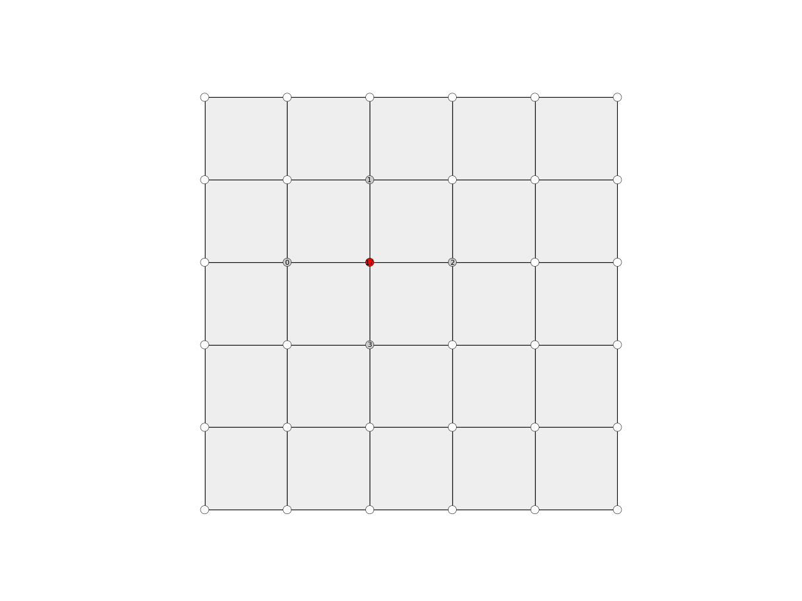

Mesh.vertex_neighbours
-
Mesh.vertex_neighbours(key, ordered=False)[source] Return the neighbours of a vertex.
- Parameters
key (hashable) – The identifier of the vertex.
ordered (bool, optional) – Return the neighbours in the cycling order of the faces. Default is false.
- Returns
list – The list of neighbouring vertices. If the vertex lies on the boundary of the mesh, an ordered list always starts and ends with with boundary vertices.
Note
Due to the nature of the ordering algorithm, the neighbours cycle around the node in the opposite direction as the cycling direction of the faces. For some algorithms this produces the expected results. For others it doesn’t. For example, a dual mesh constructed relying on these conventions will have oposite face cycle directions compared to the original.
Example
import compas from compas.datastructures import Mesh from compas.plotters import MeshPlotter mesh = Mesh.from_obj(compas.get('faces.obj')) key = 17 nbrs = mesh.vertex_neighbours(key, ordered=True) plotter = MeshPlotter(mesh) color = {nbr: '#cccccc' for nbr in nbrs} color[key] = '#ff0000' text = {nbr: str(index) for index, nbr in enumerate(nbrs)} text[key] = str(key) plotter.draw_vertices(text=text, facecolor=color) plotter.draw_faces() plotter.draw_edges() plotter.show()
